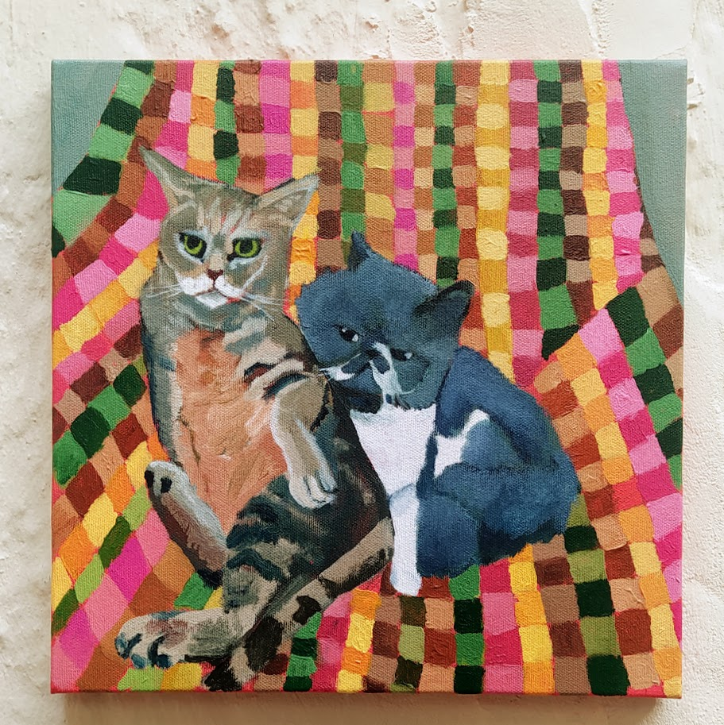

Abaixo alguns exemplos de tamanhos que costumo usar para fazer encomendas. As pinturas, em geral, levam três a quatro semanas para serem feitas, variando um pouco para mais ou para menos dependendo das circunstâncias. Já enviei encomendas para todas as regiões do Brasil e nunca tive problemas.

Acrílica sobre tela, 30x30cm. 2023.
Me especializei nos últimos dez anos em pintura em tinta acrílica sobre tela, especialmente a pintura figurativa. O tipo de trabalho que mais costumo fazer são retratos, tanto de animais quanto de humanos. Mas também tenho feito muitas naturezas mortas e tenho uma continuada pesquisa em pintura abstrata geométrica.

Acrílica sobre tela, 40x30cm. 2022
Este retrato da Josephine que eu fiz para o meu sobrinho mostra um bom exemplo do formato que eu mais costumo fazer, 30x20cm. Ele costuma funcionar bem para retratar uma figura, mas já trabalhei multiplas nesse formato e em outros parecidos.

Acrílica sobre tela, 24x18cm. 2023
Esta natureza morta é em outro tamanho que costumo trabalhar bem, 18x24cm. Já fiz naturezas-mortas fazendo uma direção de arte telemática com o cliente, com o intuito de fazer uma imagem fotográfica especificamente para servir de referência para a pintura.
Acrílica sobre tela, 30x30cm. 2022
O preço das pinturas varia de acordo com o tamanho e em casos bem específicos o tipo de pintura ou número de figuras retratatas, pinturas menores com mais figuras dão muito mais trabalho na composição, por exemplo, levando mais tempo e por isso são um pouco mais caras. Mas em geral os tamanhos tem preços fixos.

Outro exemplo de pintura em uma tela de 24x18cm. 2022
Eu pinto com tinta acrílica há mais de dez anos, nos últimos cinco venho me especializando em retratos que figuram animais de estimação, tendo pinturas minhas em diversos estados brasileiros e alguns países do mundo. Atualmente estou com a agenda aberta para encomendas e caso queira fazer um orçamento, tanto dos formatos dos exemplos acima quanto de algum outro. Podemos conversar por WhatsApp ou por e-mail.